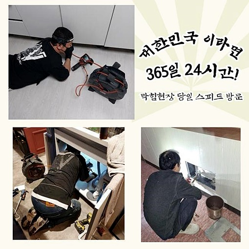
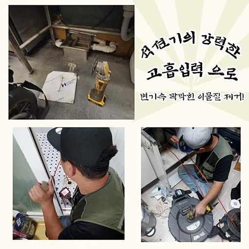
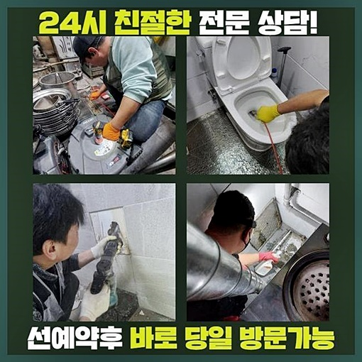
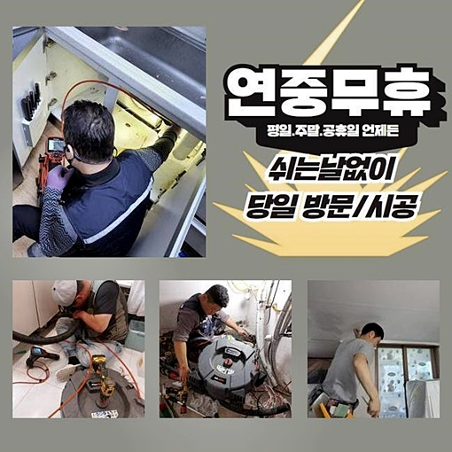
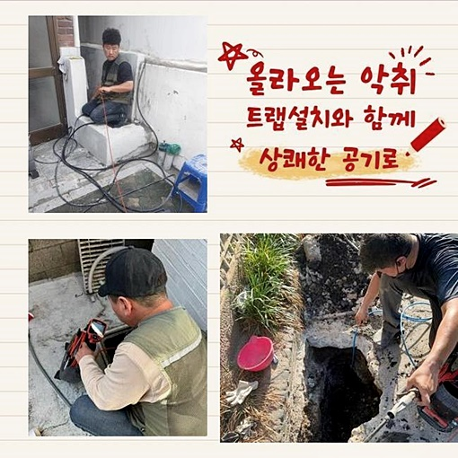
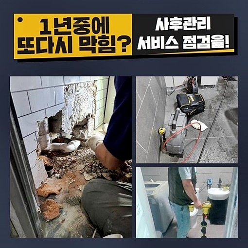
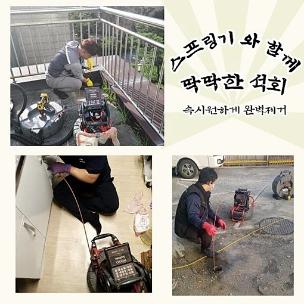

🏠 강동구 상일동씽크대뚫음 강일동 하수구뚫는곳 누수
용인 싱크대막힘 전문 시공 후기

📋 작업 개요
- 위치: 용인
- 서비스 유형: 싱크대막힘, 하수구막힘, 배관막힘, 누수수리, 역류해결, 뚫는업체, 배관청소, 악취차단
- 작업 일시: 2024. 6. 14. 9:46
- 업체명: 하수구수사대 (010-5615-2118)
🔍 문제 상황
강동구 상일동씽크대뚫음 강일동 하수구뚫는곳 누수
하루를 보내시다가 예기치 않게 하수구가 차단되어 버리면 무슨 일인지 어리둥절할 겁니다
오늘 이어질 내용에서는 하수구가 고장났을 때 어떻게 처리하면 좋을지 차근차근 가이드 할테니 인식해 주시기 바랍니다
요리 과정을 수행하는 주방 배관의 막힘이 유발되면 당일부터 기본적인 음식 조차 제 시간에 먹지 못하니 배고픔을 참아야 합니다
오염물이 녹아난 물이 역행하여 구린내까지 스믈스믈 흘러나오면 더이상 견디지 못하고 막힘을 개선하고자 나섭니다
하수구를 말끔하게 고치는 저희는 배관의 청소를 고객 선에서 빈틈없이 마무리 짓는것은 가능성이 낮다고 알려드릴 수 있겠습니다
역류현상까지 일어난 상태일 경우는 아마도 하수관 영역에 기름진 부산물들이 교차됐을 것이라 발달된 기기를 작동시켜야 하는 상황이 번번이 발생한답니다
오늘 싱크대 막힘을 처리한 장소 또한 다를 바가 없었습니다
주방에 오염된 하수가 분출된데다 냄새도 장난아니게 심하다 하셨어요
약간의 물길이라도 내보려 용해제와 철 막대로 홀로 시도해 보셨으나 역방향으로 물이 새버려 바닥면 아래 수분기가 가득 차오른 형국이라 매우 급박하다 하셨어요
준비 태세를 하고 도착하여 체크해보니 근처가 위생적으로도 심각했는데 하수는 기본이고 각종 기름 때까지 함께 솟아올라서 인지 악취가 참기 어려웠어요

🔎 원인 분석
💡 전문가 진단: 정밀 진단 장비를 사용하여 슬러지의 고착 여부를 판명하고 타격/세척 작업을 실시했습니다.
관로의 겉을 보면서 기능과 외관을 확인했더니 천만다행으로 하부 주름 배관에는 갈라짐이나 빠짐은 생기지 않은 것으로 추정됐어요
독자적으로 처리하는 과정에서 배수관이 부러지는 상황도 꽤나 된답니다
외관상의 오류 스캔을 완성했으면 하부장 아래 하수관에 석션 장비를 투여해서 실질적인 배관 막힘의 해결을 위해 접근해 봤습니다
이 석션기는 건식 청소기가 아닌 물기도 빨아당기는 성능이므로 배관 속을 깔끔하게 소독하고 작업의 바탕을 만들어 줍니다
빼곡하게 차올라 있던 하수를 흡수하는 중에 불순물도 함께 정화되는 모습이 보일 때도 있습니다
진공의 힘을 이용하여 다량의 액체를 흡입했으나 배수통에 굵직한 오염분자로 추정되는 게 없었어요
먼저 뿌옇던 하수는 소탕했으니 이후에는 배관 내측에 전용 카메라를 투여해서 파이프 속 검사를 해봤습니다
기다란 호스 말단에 촬영 렌즈가 내장되어 어두컴컴하게 막힌 배관계열이라도 얼마든지 구석구석 살펴볼 수 있어요
화면상에 노출되는 불그스름한 요소들이 모두 기름기 반응인데 끈적하게 고체화된 슬러지가 붙어있는 더럽혀진 모습이 드러났어요
더 깊은 심연으로 장비를 보내보니 덩치가 커져 버린 슬러지가 떡하니 있었어요
배관의 통로만 비좁아진게 아니고 가득 차올라 있던 덩어리가 있었던 겁니다
막힘을 만든 주된 요소를 잡아냈으니 고객님께 말씀드리고 작업 계획을 알리고 진행을 시키면 됩니다

🔧 작업 과정
호스를 위로 당겨서 카메라를 되가져왔더니 끈적한 슬러지가 기계 겉면에 달라 붙어서 쾌쾌한 냄새가 진동을 했네요
배관이 이렇게 불결했다면 예상해 보건데 평상시 곰팡이가 계속 생겼다거나 고질적인 냄새로 인한 말못 할 고민이 많으셨을겁니다
청결히 파이프 속을 스케일링 작업하면 부가적인 곤란함도 진압할 수 있습니다
겉면에 덮인 슬러지들을 걸레로 훔쳐내고 다시금 배관 특정 부분으로 유도해서 좌표를 설정했습니다
달걀껍데기나 병뚜껑같은 고형물이 머무른다면 잡아서 올리는 방법으로 해결을 봤겠지만 슬러지때문이니 반드시 플렉스샤프트 장치의 보조가 필요했어요
샤프트는 원을 그리며 회전하며 덩어리화된 기름기나 노폐물을 걷어올리거나 분쇄해서 꺼내주는 작업에 기여하는 장치입니다
장비 끝부분에 달린것이 체인 디자인으로 경화된 슬러지의 분해 능력도 높은 평가를 받고있어요
실내 싱크대 고장의 동기가 기름기라고 판단되면 거의 대부분 사용하는 맞춤 기기라해도 과언이 아닙니다
내시경을 넣어서 배관 차단된 라인을 주의 깊게 보면서 단계별로 내부 질서를 잡았습니다
슬러지를 정교하게 분할하여 산산조각을 내주고 석션기기를 가동시켜서 빨아당기는 과정을 반복하여 내부를 맑게 만들어갔어요
이렇게 처리한 잔해를 떠내려가게 방치한다면 심부에 저축되어 고난이도의 결함이 나타나면 곤란하니 흩어진 파편은 석션기로 남김 없이 처단하는 작업을 꼭 실행합니다
여러 가정이 공동으로 쓰는 방대한 오수 처리망에 이물질로인한 고장이 생길 땐 이물질 수량이 너무 많아서 힘을 가하여 밀어주는 기법을 이용합니다
작은 실내 배관에서 문제가 나타난 경우라면 찾아낸 지점을 깨끗하게 만드는 부분에 핵심 가치를 두고 청소 서비스를 해드립니다
여러번 반복해야 하지만 이런 방식으로 하수관의 내부를 매끈하게 조성해 두면 거듭되는 막힘으로 헛된 시간을 쓸 일이 없어요
작업을 진행하는 당일에 제대로 수행하여 본질과 장기적 영향까지 조정해 드리는 방향성이 하수구 정비 팀의 소임이라고 생각해요
주방 배수 경로 정비를 마무리한 뒤의 안을 관찰해 봤더니 잘 개통된 상황을 인식할 수 있었어요
빨간 기름기가 전혀 남지않게 모조리 빼내서 폐기했으니 유사한 막힘 사태가 거듭 일어날 일은 현저히 낮을겁니다
눈으로 하는 검증 이후에 성능이 정상화됐나 보기위해 통수 테스트를 시작했어요
미처 살피지 못한 막힘의 근원부들이 또 존재할 수 있으므로 바가지에 물을 채워서 내려보냈습니다


✅ 작업 완료
당연히 막힘 없이 빠져나가기에 오늘의 업무가 원만함을 확신하게 됐어요
아무 생각없이 뚫다가는 배관이 다쳐서 누수 등이 실현되기도 하니 하수구 정비 전문가에게 작업을 할당하여 곤란을 타개하시라고 알려드리고 싶습니다
막힘은 방치할수록 심해지니 한시간 내로 언제든지 현장에 당도할 수 있으니 안심하고 전화주시면 됩니다
더불어 투명한 가격 정산으로 경제적인 고충도 거들어 드릴테니 불안해 하지 마시고 전화해 주신다면 속히 내방드릴게요
세밀한 조사를 바탕으로 청결한 배관 정화작업을 전담 해 드리겠습니다




⚠️ 베란다 누수 및 방수 관리 방법
- ✅ 비가 많이 올 때 창틀 주변이나 아래층 천장에 얼룩이 생기는지 정기적으로 확인해 보세요.
- ✅ 우수관 주변 실리콘 마감이 들뜨거나 깨진 틈새가 있는지 손상 여부를 수시로 체크하세요.
- ✅ 베란다 바닥 타일의 줄눈(메지)이 소실되면 그 틈으로 물이 침투하여 누수가 유발됩니다.
- ✅ 누수 의심 증상 발견 시 방치하면 아래층 손실이 커지므로 즉시 전문가의 진단을 받으십시오.
💡 핵심 정리
- 확실한 장비 작업(내시경 점검 및 샤프트 스케일링)으로 원인을 뿌리 뽑습니다.
- 작업 후 1년 이내에 동일한 부위 재발 시 100% 무상 A/S 서비스를 보장합니다.
- 서울 · 경기 · 인천 전 지역에 24시간 언제든 긴급 출동할 수 있도록 항시 대기 중입니다.
❓ 자주 묻는 질문 (FAQ)
🚨 용인 싱크대막힘 문제로 고민이신가요?
정확한 원인 진단과 확실한 시공으로 재발 없는 해결을 약속드립니다.
24시간 긴급 출동 | 서울 · 경기 · 인천 전지역 | 1년 내 재발 시 무상 A/S